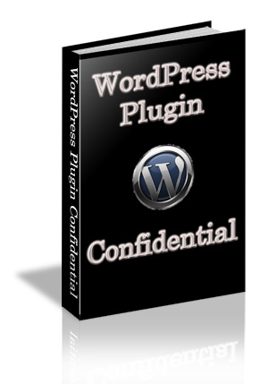

"Turn Your WordPress Blog Into A Marketing Monster"
here are over 11.4 millions WordPress blog as of this moment...and that number is growing daily.
If you're reading this...you're most likely one of them.
And more likely than not...you're pulling your hair out of your head trying to optimize your blog to get the best search engine rankings and the most visitors possible.
And you probably know that the way to that optimization is through the use of plugins.
But which plugins?
There are currently over 11,000 in the WordPress catalog...not to mention third party sites.
Finding the right plugin for your needs can be an absolute nightmare.
WordPress Plugin Confidential To The Rescue

I have ransacked the WordPress archives and have picked out 100 of the most must have WordPress Plugins...hands down.
- Save Countless Hours Of Search Time
- Avoid The Frustration Of Trial And Error
- Take Out The Mystery Of If It Will Work
- Stop Wondering If The Plugin Is Outdated
WordPress Plugin Confidential cuts right to the heart of the plugins that you will need to fully optimize your blog and turn it into a marketing powerhouse platform.
How Would You Like To Discover...?
- The Best Plugin To Load Your Pages Lightning Quick
- The Best Plugin For SEO
- The Best Plugin For Handling Duplicate Content
- The Best Plugin For Building A Social Network
- The Best Plugin For Handling 404 Errors
- The Best Plugin For Hosting A Podcast
- The Best Plugin For Handling Duplicate Content
- The Best Plugin For Keeping Your Images And Content From Being Stolen
- And so much more...
100 Of The Best Plugins...A Click Away
Each plugin comes with the following information:
- Plugin Name
- Description Of Plugin Function
- Direct Link To Plugin Download
- Minimum WordPress Version Supported
- Current WordPress Version Compatible To
- Last Date Plugin Updated
- Average Rating
How Much Is Your Time Worth To You?
You could absolutely just go to the WordPress plugins directory and manually search through them all...testing each one until you find something you like.
Thousands of hours...possibly for nothing.
Or you can grab a copy of WordPress Plugin Confidential for a song and get the plugins you need...IMMEDIATELY.
The book is completely index (A-Z) so finding the plugin you're interested in is a snap.
And this book can be yours for a paltry $29.95.
And if you're not absolutely thrilled with this book...I am backing it up with a no questions asked 60 Day Guarantee.
My Exclusive Bonuses To You
As a bonus...I am including my never before released PDF on Blogger and WordPress blogs.
106 power packed pages covering everything from installation to optimization...all graphically illustrated in step by step detail.
But That's Not All
You will also get WordPress Theme Confidential.
25 of the best WordPress themes (not at their site) covering everything from Anime to Video...all FREE.
Each theme comes with the following info:
- Theme Name And Category
- Quick Download Link
- List Of Required Plugins For Theme
- List Of Theme Features
- 300 x 300 JPG Image Of Theme Look
Plus...a special link to an incredible site with hundreds of more FREE themes.
You are NEVER going to find a deal like this anywhere.
I have absolutely NO IDEA how long I will keep this offer open...so don't wait.
Sincerely,
Hunter Ummels
PS - Remember...you get the plugins directory PLUS the 106 page WordPress and Blogger bonus for just $29.95...but this offer won't last long